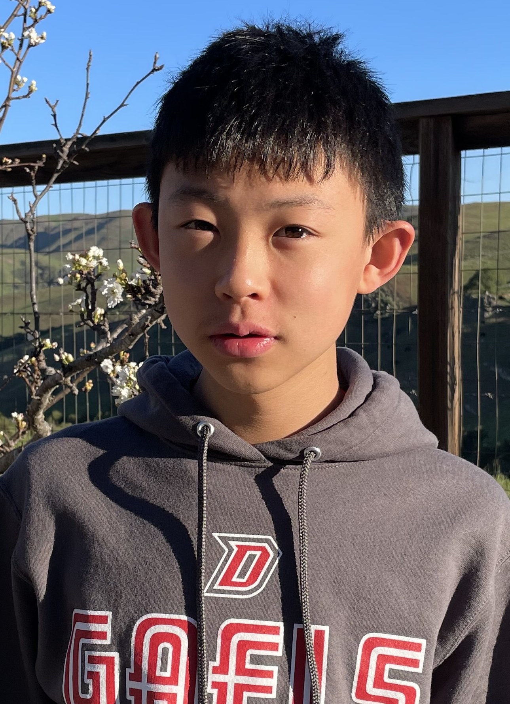

About Me
2022-03-07

There is nothing more satisfying than finally making a program work. This is especially true if you spent several hours beforehand screaming and cursing at its many mysterious and unfindable bugs. As such, I plan to go into a career in computer programming, working on operating systems, games and whatever else I’m interested in. I plan to go to MIT or a similar technical school to get the right knowledge and meet the right people to achieve this goal.
After talking with some programmers I know, I have found that the three most important qualities of a programmer are ingenuity, teamwork and patience. I have acquired these skills through working with others on projects and spending hours debugging (regular expressions are pain). I am also building these skills during high school; currently I am preparing for the USACO programming contest, I am programming Lua games with the Love2D framework, and I have already completed several projects in Python.
From these experiences, I have improved my problem-solving skills, and I am able to prioritize work and block out distractions.
I have learned much about myself from these experiences, and they have taught me how to be an effective programmer. All in all, I hope that I will be able to reach my goals and do what I love.